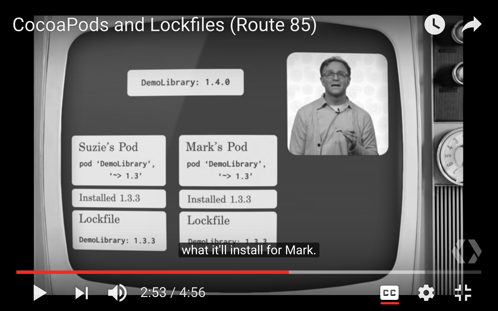
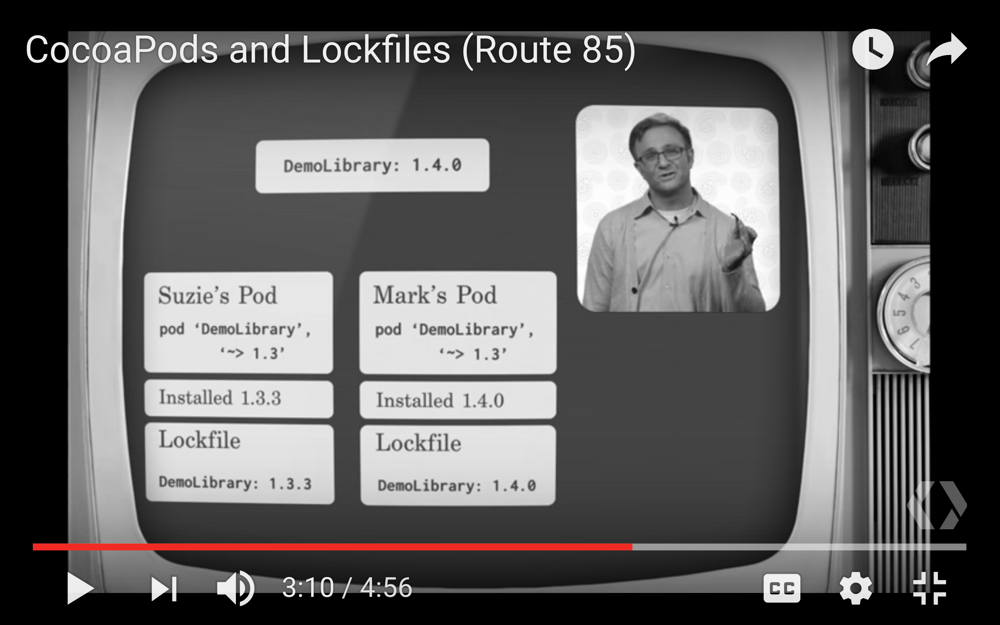

What is Podfile.lock?
Apr 24, 2017
My way to Understanding what is Podfile.lock
Have you ever encounter this error before?

Simply run pod install can solve this problem, but if you interested in why cause this problem, please read more !
Assume that you have basic concept of using Cocoapods That said after first time run
pod install, you will generate a file call Podfile.lock . First, don’t let that lock name confuse you. The purpose of Podfile.lock is
tracking of every version of every library that Cocoapods has installed for you, especially working together with a team. so I copy some screenshots
from “CocoaPods and Lockfiles (Route 85)” for easily to explain.
Pod install
According to the screenshot, run pod install will install Version 1.3.3 DemoLibrary on Suzie’s project

Fews days later, DemoLibrary update to version 1.4.0

Your coworker(Mark) run pod install and then version 1.4.0 DemoLibrary will show up on Mark’s project, And when you merge those two project together. Boom, because your project using the feature on version 1.3.3 but not fit on Mark’s project which is version 1.4.0。

So here is how Podfile.lock work, record the version of what Suzie had installed, then cocoapods will check what version Suzie had installed and then install on Mark’s project。

so if Mark run pod update, then Podfile.lock will changed to version 1.4.0, after merge, it will appear like above error，so this is why cause this error。

Another nice feature is cocoapods will create a snapshot of every library while using source control